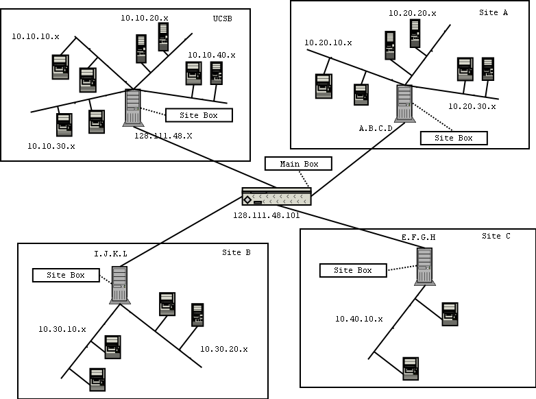

The Capture The Flag (CTF) exercise involves a number of sites (e.g., UCSB, UC Davis, Georgia Tech). Each site has a number of independent teams (for example, UCSB has four teams).
Each site has a dedicated non-routeable set of addresses. Each team at each site has a dedicated class C subnetwork allocated within the address space of the site. For example, UCSB has the 10.10.x.x address space, and the four UCSB teams has address spaces 10.10.10.x, 10.10.20.x, 10.10.30.x, and 10.10.40.x, respectively.
Each site has a dedicated host, called the site box. The site box is connected to each of the site team subnetworks by means of a dedicated interface whose address is the "1" address of the corresponding subnetwork. For example, UCSB's site box is connected to the subnetworks through four interfaces with addresses 10.10.10.1, 10.10.20.1, 10.10.30.1, and 10.10.40.1, respectively.
Each site box is connected to a central host called the main box. The connection between site boxes and the main box is implemented through a VPN tunnel. The figure below shows an example of the topology for four sites (UCSB, A, B, and C), with four, three, two, and one team, respectively.

Each site has a range of IP address assigned. You can check the IP address range assignments here.
If you are not on the participant list, send email to vigna@cs.ucsb.edu. If you are listed but you do not have an IP address range, send email to fredrik@cs.ucsb.edu.
Each site box is connected to the main box through a encrypted tunnel. The main box is running the FreeS/WAN VPN implementation. It is strongly recommended that the site box runs RedHat 9.0, since precompiled RPMs are available. If you prefer another distribution, you should verify that necessary packages are available. FreeS/WAN version 1.99 and 2.03 have been tested.
To set up FreeS/WAN on RedHat 9.0, fetch the two RPMS freeswan-module and freeswan-userland. Install these packages with the command:
rpm -i freeswan-module-2.03_2.4.20_8-0.i386.rpm freeswan-userland-2.03_2.4.20_8-0.i386.rpm
Make sure ipsec is running at startup by running:
/sbin/chkconfig --level 345 ipsec on
Then, generate your public/private key-pair. Type the command:
ipsec newhostkey --output /etc/ipsec.secrets
Export a copy of your public key by executing:
ipsec showhostkey --left > publickey.out
After this step, email a copy of the file publickey.out along with the IP address of your site box to fredrik@cs.ucsb.edu. He will return you a configuration file to be put in /etc/ipsec.d/.
If there is a firewall between the site box and the Internet, make sure that the IPSEC traffic is allowed to pass through. You need to open UDP port 500 and the ESP protocol to the main box. With iptables it can be done like with this commands:
iptables -A INPUT -s 128.111.48.101 -p udp --dport 500 -j ACCEPT iptables -A INPUT -s 128.111.48.101 -p esp -j ACCEPT
The site boxes are configured so that all the traffic out of each team subnetwork is sent to the main box. This is an important difference with respect to a standard configuration. In a "normal" set up, traffic exchanged between two subnetworks connected to the same site box would not be sent to the main box. In this setup, instead, the traffic has always to be forwarded to the main box because the box is configured to anonymize the traffic and collect statistics. For example, imagine the two hosts 10.10.20.2 and 10.10.40.2 in the figure above want to communicate. In a usual setup the traffic would have been routed through the site box only. In the CTF setup the traffic is routed through the following path: 10.10.20.2 -> site box -> main box -> site box -> 10.10.40.2.
To achieve this, it is necessary to configure a site box properly. Note that if you only have one team at your site, you do not have to perform this step. Also, this step should not be performed until the VPN is set up (and tested).
To set up the routing configuration, the following magic commands work (again on RedHat 9.0):
# Clear the mangle table iptables -t mangle -F # Mark packets coming from teams, going to other teams # Assumes your public interface is eth0 iptables -t mangle -A PREROUTING -i eth0 -j RETURN iptables -t mangle -A PREROUTING -i eth+ -d 10.0.0.0/8 -j MARK --set-mark 1 # Delete pre-existing stuff # May give error messages, this is OK ip rule del fwmark 1 ip route del table 1 # Add a new routingtable with default route through the VPN ip route add default table 1 via 128.111.48.101 dev ipsec0 ip rule add fwmark 1 table 1
Note that after these commands are executed, the connection between the local subnets will break if the VPN goes down. If this happens, "ip rule del fwmark 1" will fix things.
Each team can have any number of hosts in their subnetwork. The only requirement is that a PC, called, the team box is part of the subnetwork. The team box Red Hat 9 and VMware Workstation 4.0.5 installed. Red Hat 9 is freely available. A copy of the ISO images for the installation disks is available here. A copy of the RPM for VMware Workstation 4.0.5 is available here. A 30-day evaluation key for VMware is available at the VMware web site.
To configure a team host, first install Red Hat 9. Then install VMware and configure it. The VMware host must be assigned an address within the subnetwork address space. For example, if the team's subnetwork is 10.10.30.x, then the team box may have address 10.10.30.5 and the VMware host running on it may be assigned the 10.10.30.67 address.
You can test your VMware installation by loading a test image that is available here.
Note that the VMware host is the only host in a team's network that has to be reachable from the outside. All the other hosts can be configured to block traffic coming from the outside.